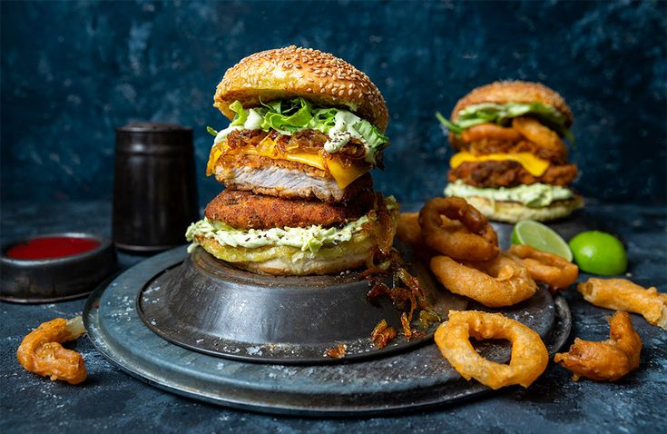

Schnitzel Burger

Description
A crispy pork schnitzel hugged by a soft bun, topped with melty cheddar
and sweet caramelised onions.
Ingredients
- 4 pork loin chops, deboned and skin removed
- 1 C (250 ml) buttermilk
- 1 tsp (5 ml) salt
- 1 tsp (5 ml) pepper
- 1 tsp (5 ml) paprika
- 200 g fine bread crumbs
- 200 g fine bread crumbs
- 1 tsp (5 ml) dried mixed herbs
- sunflower oil, for frying
Steps
-
Place the deboned loin chops on a cutting board and cover with two
layers of plastic wrap. Use a meat mallet to flatten the chops to 0.5 cm
in thickness.
-
Add the buttermilk, salt, pepper and paprika to a mixing bowl and stir
to combine. Add the pork and coat evenly in the buttermilk mixture.
Cover and refrigerate for at least 30 minutes.
-
Mix the breadcrumbs, paprika and herbs together in a shallow dish.
-
Remove a pork chop from the buttermilk, allowing the excess to drip off.
Dredge one side in the seasoned breadcrumbs, then flip over and press
the breadcrumbs in until well covered all over. Repeat with remaining
chops. Place the prepared chops onto a baking tray and into the
refrigerator, uncovered, for 10-15 minutes.
-
Place a frying pan over medium heat and add enough oil for shallow
frying. Test that the oil is hot enough by frying a small piece of bread
first.
-
Depending on the size of your pan, place 1-2 chops into the oil and fry
for 4 minutes on each side or until golden brown. A thermometer inserted
into the centre should read 63 ºC.
-
If the chops are golden but not cooked all the way through, place into
the oven or air fryer at 180 ºC to finish cooking. To keep warm, place
into the oven or air fryer at 60 ºC.
Home